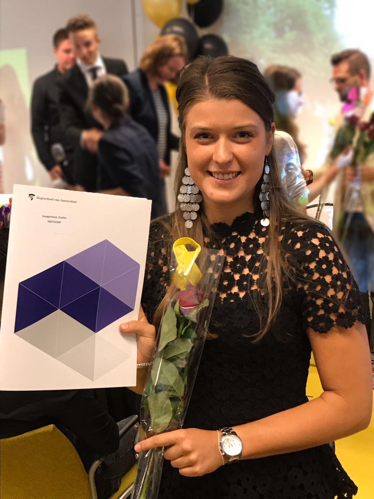

About me
Student Communication and Multimedia Design. Ik ben momenteel studente op de Hogeschool van Amsterdam. Het ontwerpen en bedenken van nieuwe (digitale) producten ben ik maar al te graag mee bezig. Ik vind het belangrijk om problemen op een creatieve manier op te lossen.
*Ik ben ondernemend, zelfstandig, leergierig, flexibel, stressbestendig en accuraat en kan zaken uitstekend organiseren en coördineren. Voor mij is het belangrijk om bij een organisatie te werken met professionele collega’s die een prettige werksfeer belangrijk vinden. Een goede samenwerking is in mijn ogen namelijk noodzakelijk om uiteindelijk (gezamenlijk) een goed resultaat neer te zetten. In mijn werk ben ik altijd op zoek naar dé uitdaging om mezelf te blijven ontwikkelen. Mijn sterkste competenties zijn: Kwaliteitsgericht, stressbestendig, proactief, samenwerken, inlevingsvermogen, verantwoordelijkheidsgevoel, analytisch vermogen, commercieel en communicatie.*
Projects
Website StoryBomB
Maak een responsive verhalen website voor de opdrachtgever Transavia en zorgt dat de gebruiker deze verhalen interessant vinden, gemakkelijk terug kunnen vinden en eventueel kunnen downloaden. Deze website is responsive gemaakt met html, css en js.

Kaartenset
Dit is een ontworpen kaartenset, om de theorie zo voor mezelf overzichtelijk, makkelijk en natuurlijk visueel te maken.